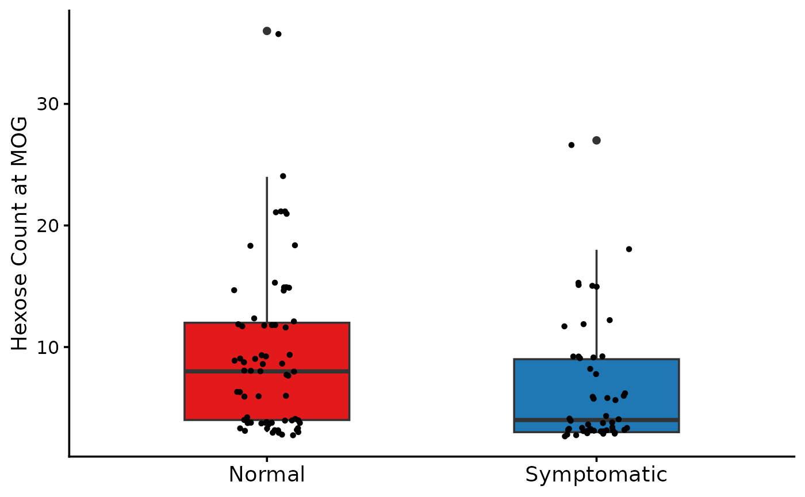

Quick Start
The example uses publicly available pGlyco3 GPSM data hosted on Zenodo.
1. Load example data
# The following is an example file from Zenodo
# url <- "https://zenodo.org/records/17756830/files/pGlycoDB-GP-FDR-Pro-Quant-Site.txt?download=1"
# download.file(url, "pGlyco3_GPSM.txt", mode = "wb")
# gpsm <- read_pGlyco3_gpsm("pGlyco3_GPSM.txt")
# meta_url <- "https://zenodo.org/records/17759790/files/meta_mcp_2022_100433.rds?download=1"
# download.file(meta_url, "meta_example.rds", mode = "wb")
# meta <- readRDS("meta_example.rds")
# The following is a smaller toy example files from package
path <- system.file("extdata", "pGlyco3_gpsm_toyexample.txt", package = "glycoTraitR")
gpsm_toyexample <- read_pGlyco3_gpsm(path)
data("meta_toyexample")2. Build glycan trait matrices
trait_se <- build_trait_se(
gpsm_toyexample,
from = "pGlyco3",
motifs = NULL,
level = "protein",
meta = meta_toyexample
)## adding traits to the gpsm matrix## generating protein trait matrices3. Differential analysis
changed_traits <- analyze_trait_changes(
trait_se = trait_se,
group_col = "Diagnosis",
group_levels = c("Normal", "Symptomatic"),
min_psm = 20
)
head(changed_traits)## trait level l_pval f_val t_pval t_val
## t GlycanSize CNTN1 0.03309985 4.570347 0.03318245 2.136934
## t1 GlycanSize ITB8 0.01750819 5.994530 0.08711770 -1.793639
## t2 GlycanSize MOG 0.07219982 3.291038 0.02897848 2.210923
## t3 Hexose ITB8 0.01964245 5.770116 0.09411908 -1.749760
## t4 Hexose MOG 0.09384406 2.853005 0.01962574 2.365832
## t5 HexNAc CNTN1 0.04575081 4.014279 0.02068097 2.3224564. Trait distribution visualization
p <- plot_trait_distribution(
trait_se = trait_se,
group_col = "Diagnosis",
group_levels = c("Normal", "Symptomatic"),
trait_name = "Hexose",
feature = "MOG"
)
p$p_hist## Warning: The dot-dot notation (`..count..`) was deprecated in ggplot2 3.4.0.
## ℹ Please use `after_stat(count)` instead.
## ℹ The deprecated feature was likely used in the glycoTraitR package.
## Please report the issue to the authors.
## This warning is displayed once every 8 hours.
## Call `lifecycle::last_lifecycle_warnings()` to see where this warning was
## generated.
p$p_box